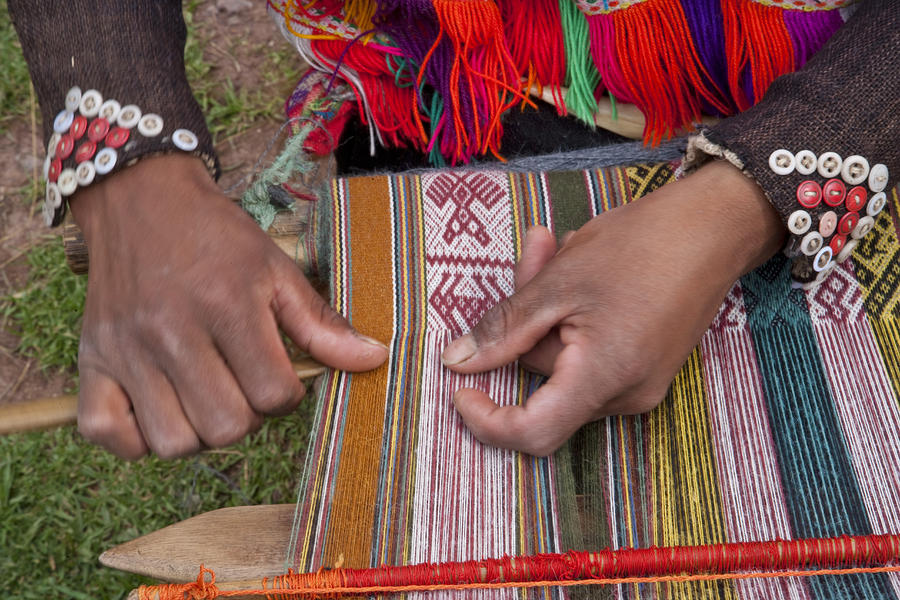

- Peruvian weaver using the traditional technique: 
- Back strap loom in a rural setting:

Weaving is the interlacing of a set of warp with a set of weft, essentially creating a grid pattern of interlocking yarns. A loom is used to facilitate the weaving process, by providing a means of tensioning the warp and creating space through which to pass the weft. Looms can be highly complex or very simple, using a frame, the weaver’s body, or even gravity to provide the necessary tension. I grew up surrounded by beautiful textiles, many of them hand-woven with the ancient peruvian techniques. I have always love weaving but I became more passionate about it when I started to study Textile Design. My midterm website will be about weaving, my own experience as a weaver and the traditional peruvian weaving techniques.

In this website, I will explain the basics of weaving for all the people that don't know about it. Then, I will put images of my own work and tell my experience so it may pick up somebody's interest to start weaving. I also wanna share part of my rich cultural background as Peruvian by explaining the basics of the back strap loom and some of the ancient techniques still used today. In the Andes, weavers use the backstrap loom, the oldest form of loom in the world. An entirely non-mechanized instrument, it is constructed with wood, bone, and strings, and is easily portable from home to field, wrapped inside the traditional lliqlla or manta (carrying shawl) that every woman wears. Here's is a video of the "Traditional Weaving Process in Peru." This part of the website would be the most important for me since it takes me back to my roots and my love for Peruvian textiles.